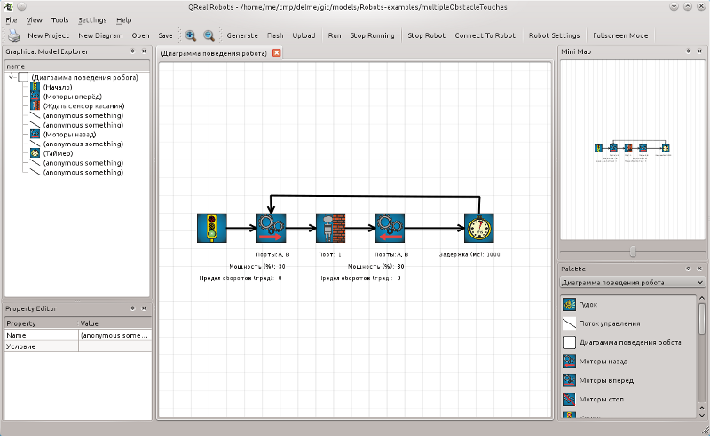
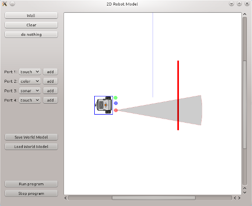

Интерфейс QReal:Robots
Общий вид интерфейса QReal приведен на рисунке:

- Главное меню содержит набор базовых операций и настроек среды.
- Пункты меню "Файл"
- Открыть — открыть сохраненную диаграму. В настоящее время диаграммы сохраняются на диск в виде иерархии каталогов. Для того, чтобы открыть диаграмму, нужно выбрать каталог, внутри которого находится каталог save.
- Сохранить — сохранить открытые диаграммы в текущий каталог.
- Сохранить как — выбрать новый каталог и сохранить открытые диаграммы в него.
- Пункты меню "Инструменты":
- Выполнить — запустить выполнение отображаемой в данный момент диаграммы на роботе.
- Прервать выполнение — остановить выполнение программы, сбросив интерпретатор в изначальное состояние.
- Отключить робота — прервать выполнение программы и послать роботу команды отключения моторов.
- Загрузить программу — сгенерировать по код, соответствующий текущей диаграмме, и загрузить его для выполнения на робота.
- Загрузить прошивку — загрузить на робота прошивку, позволяющую выполнять загруженные в него программы.
- Пункты меню "Настройки" (подробнее см. раздел Диалог настроек QReal:Robots):
- Настройки — открыть окно настройки QReal:Robots
- Настройки робота — открыть окно настройки робота QReal:Robots
- Панель "Файл" повторяет операции, доступные из меню "Файл"
- Панель "Вид" содержит кнопки, позволяющие масштабировать диаграммы. Этого же можно добиться вращением колесика мыши.
- Панель "Интерпретатор" содержит команды запуска и остановки выполнения программы, доступные из меню "Инструменты". При настройке QReal:Robots на работу с двухмерной моделью (см. раздел Диалог двухмерной модели робота), эта панель также содержит кнопку отображения окна двухмерной модели.
- Панель "Взаимодействие с роботом" содержит следующие операции:
- Код — сгенерировать и открыть в отдельном редакторе код для прошивки nxtOSEK, соответствующий текущей диаграмме.
- Прошивка — загрузить в робота по USB прошивку nxtOSEK.
- Загрузить — загрузить код, соответствующий текущей диаграмме, для исполнения на робота.
- Панель "Управление роботом" содержит кнопку для быстрого открытия окна настроек робота QReal:Robots.
- Панель "Разное" содержит кнопку, позволяющую перевести QReal:Robots в "полноэкранный режим" — в этом режиме отображается только окно редактора и палитра элементов. Данный режим полезен для использования на компьютерах с небольшими мониторами.
- Окно редактора отображает текущую диаграмму и позволяет ее редактировать. Здесь же осуществляется отображение текущего исполняемого блока при интерпретации диаграмм.
- Миникарта — уменьшенный вид на диаграмму. Содержит элемент управления (слайдер), позволяющий менять масштаб.
- Палитра элементов содержит набор доступных блоков и связей между ними, которые можно добавить на диаграмму. Подробнее о процессе создания диаграмм в QReal:Robots см. раздел Создание программ.
- Обозреватель диаграмм представляет диаграммы и элементы на них в иерархическом виде.
- Редактор свойств используется для отображения и редактирования значений свойств выделенных элементов.
Режим работы с двухмерной моделью полезен для отладки программ, а также в случае отсутствия реального устройства робота. В этом режиме программы могут также выполняться в пошаговом режиме, но в этом случае команды не передаются роботу по протоколу Bluetooth, а исполняются для виртуальной модели робота, отображающейся на экране. Осуществляется моделирование двухколесной тележки. Считается, что изначально робот находится в бесконечном пустом пространстве, для программиста существует возможность расставлять препятствия в виде стен. При этом эмулируется работа датчиков касания и ультразвукового датчика расстояния.
Окно двухмерной модели робота QReal:Robots доступно для отображения, если в качестве типа модели робота в диалоге настроек робота выбран пункт "Двухмерная модель" (см. раздел Диалог настроек QReal:Robots). В таком случае, при нажатии на кнопку "Двухмерная модель" панели "Интерпретатор" будет открыто следующее окно:

Данное также окно открывается автоматически, если в этом режиме начать выполнение программы с помощью пункта меню или панели QReal:Robots.
- Сцена двухмерной модели. Представляет собой виртуальное пространство, в котором будет двигаться модель робота, обозначенная соответствующей иконкой.
- Панель управления препятствиями содержит следующие кнопки:
- Стена — добавить на сцену препятствие в виде стены. Препятствие отображается в виде красной линии, при касании такой линии сенсором касания или при попадании в зону действия ультразвукового сенсора расстрояния происходит срабатывание сенсора.
- Очистить — убрать все препятствия и сенсоры со сцены. После выполнения этого действия робот остается в пустом пространстве.
- Ничего не делать — just ничего не делать.
- Панель управления сенсорами позволяет менять конфигурацию и расположение сенсоров модели робота. Для каждого порта можно выбрать интересующий датчик, нажать кнопку "Добавить" и, кликнув на произвольном месте сцены, добавить туда соответствующий сенсор. При этом будет считаться, что сенсор соединен с роботом, то есть он при движении иконки робота сенсоры будут двигаться вместе с ним, даже если они находятся на некотором расстоянии от модели робота. Датчик касания обозначается на диаграмме зеленым кружком, датчик цвета — синим, ультразвуковой датчик расстояния — красным. Кроме того, рядом с последним отображается серый конус, обозначающий область, в которой этот датчик будет регистрировать препятствия.
- Панель управления двухмерной моделью позволяет сохранять и загружать конфигурации модели окружающего мира.
- Панель управления роботом позволяет запускать и останавливать выполнение текущей программы.